1
Click + New Employee
The Employees page lists everyone you track. The i next to the title says a login is optional and is made from the row.
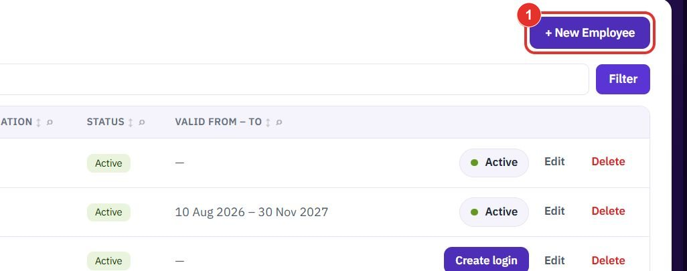
Add people to the workspace, give them a login, and set the shift, site and role that decide where their punches and requests go. Each step shows the exact button to click.
Want the full chapter? Solution Guide, chapter 6: Platform and master data (PDF) · All documentation
Do this when someone joins. Open app.bpmsquare.com/employees.
The Employees page lists everyone you track. The i next to the title says a login is optional and is made from the row.

This is the only field marked with an asterisk. Employee code is assigned for you (EMP-####).
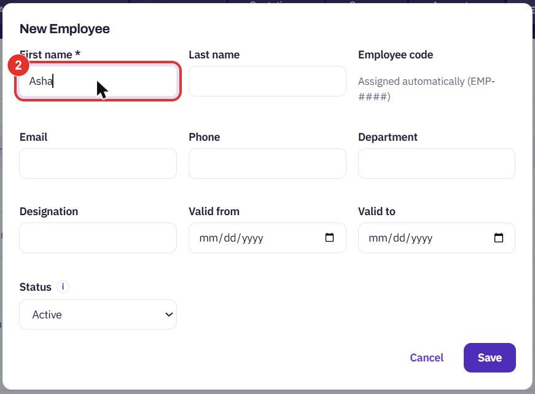
Add Last name, Email, Phone, Department, Designation, Valid from and Valid to if you have them.
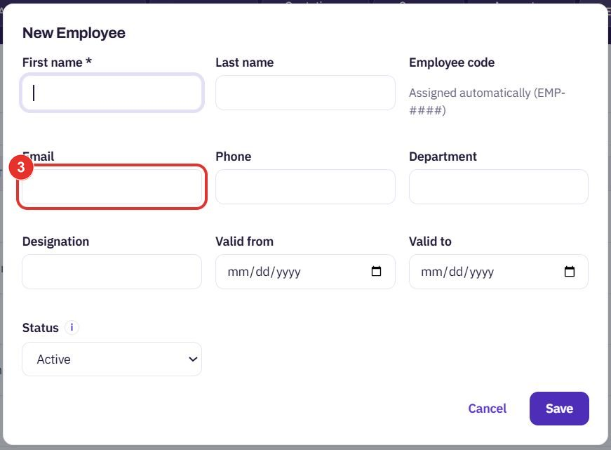
New people start as Active. The i next to Status says obsolete employees stay in reports up to their Valid to date, then drop out.
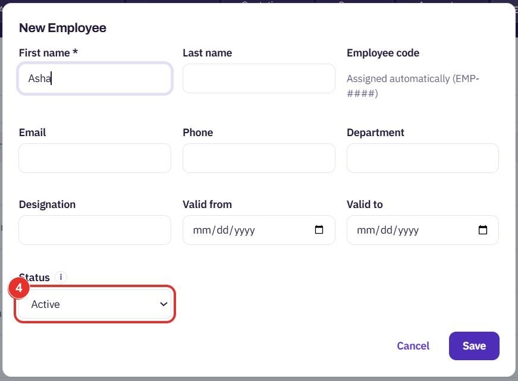
Save adds the person to the list. Cancel closes the form without adding anyone.
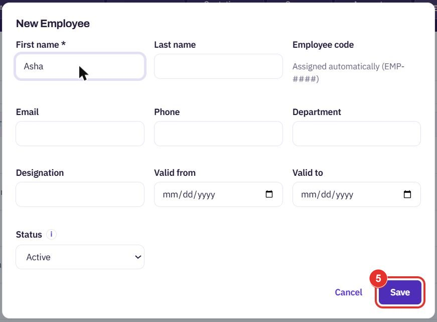
Do this when a person needs to sign in, for example to punch from a phone.
Only people without a login show this button. People who already have one show an Active badge in its place.
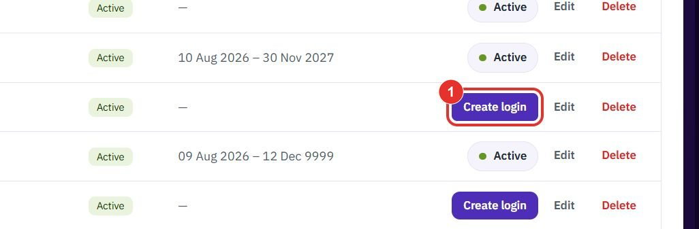
A side panel called Invite opens. Type the work email the person will sign in with.
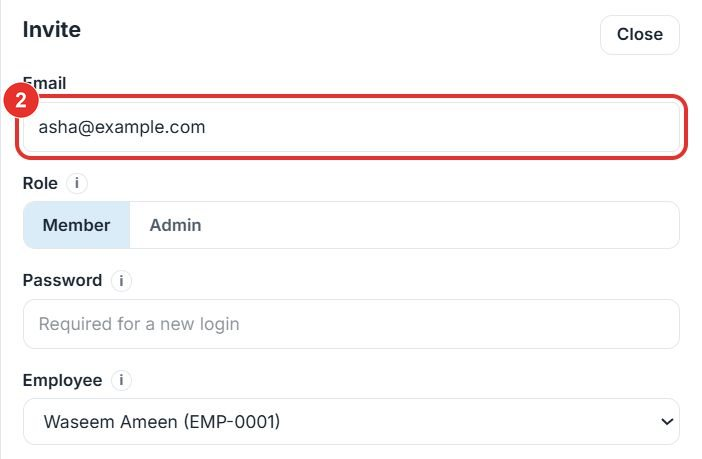
Member or Admin. The i says an Admin can change settings and reach everything, and a Member reaches only what their business roles allow.
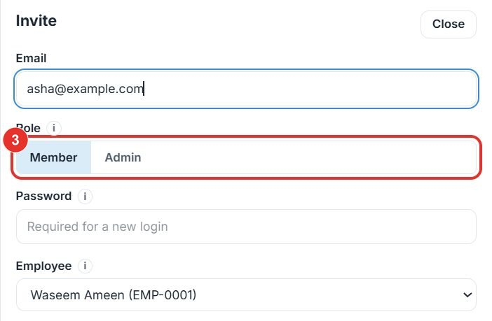
A password is needed for a new login, because no invite email is sent. Tell the person the password yourself.
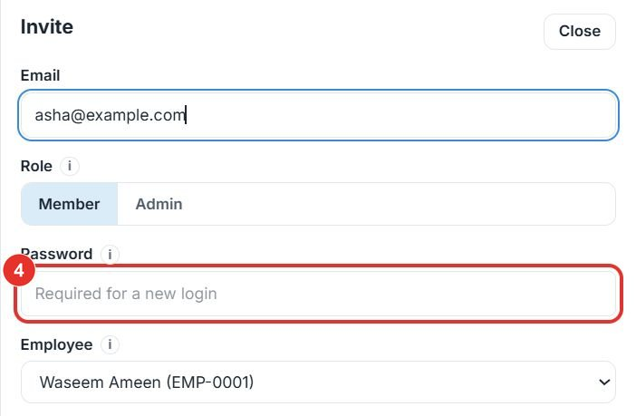
The person whose row you clicked is already chosen. The i says only an employee without a login can be picked.
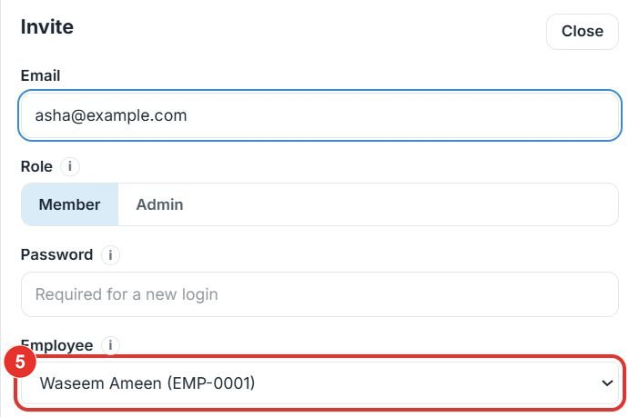
Add creates the login. Close at the top of the panel leaves without creating one.
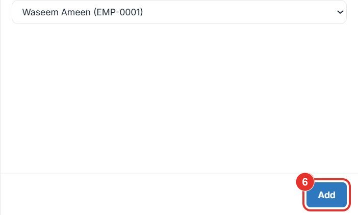
Do this to look someone up, or to bring an obsolete employee back.
Search by name, code, email or department. Each column heading also has a small search icon for that column.
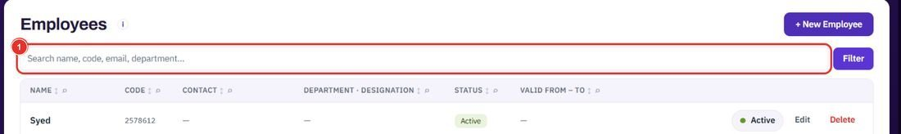
Filter applies what you typed. The page address changes, so you can share the filtered list.
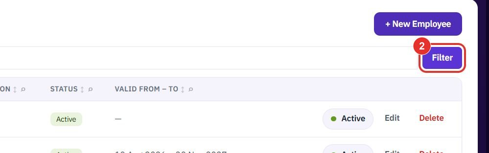
Obsolete people show a red Obsolete status and the dates they were valid. Make active brings them back.
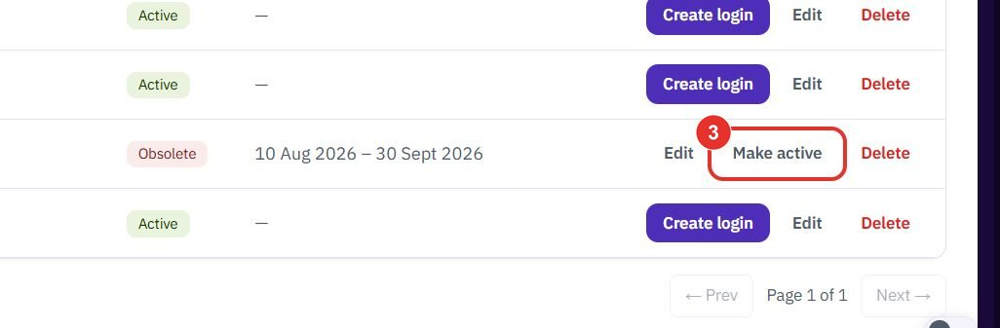
Do this on the Workforce employees page (app.bpmsquare.com/wfm/employees). Shift and site decide whose queue a person's requests land in.
The list shows Code, Name, Type, WFM role, Shift, Home site, Supervisor, Login, Consent and Status.
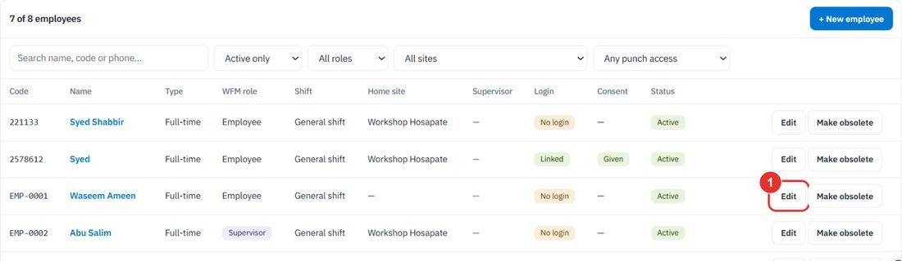
The list holds the workspace's shifts, for example General shift and Second Shift.
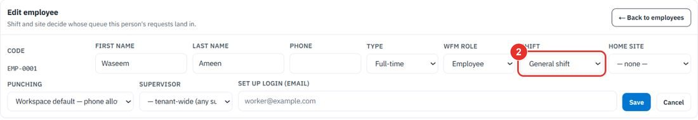
The site the person normally works at. — none — leaves it empty.
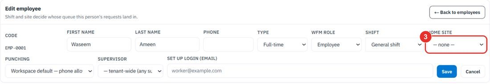
Employee or Supervisor. The Supervisor list below picks who approves this person's requests. It starts as any supervisor.
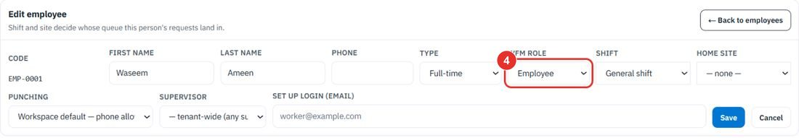
The Punching list has Workspace default — phone allowed, Kiosk only and Phone punch + kiosk.
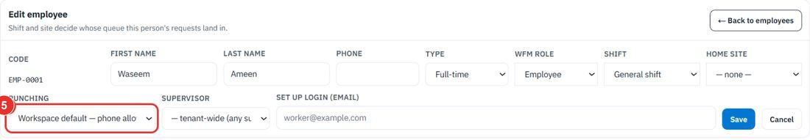
Cancel closes the form without saving. The same form has a Set up login (email) box.
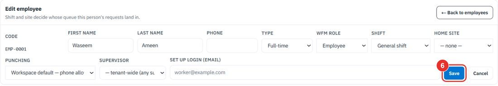
Twenty minutes on a live workspace, with your files and your team.